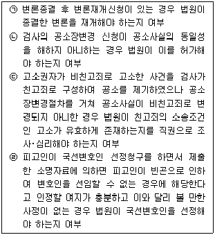
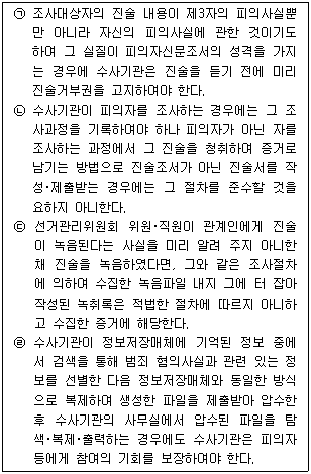

경찰공무원(순경)-형사소송법 (2019-08-31 기출문제)
1. 형사소송법의 법원(法源)에 대한 설명으로 가장 적절한 것은? (다툼이 있는 경우 판례에 의함)
- 헌법은 최상위법으로 형사소송법의 법원이며, 검사의 영장 신청과 사법경찰관에 대한 검사의 수사지휘는 헌법에 명시적으로 규정되어 있다.
- 실질적 의미의 형사소송법이란 내용과 명칭이 모두 형사소송법인 법률을 말하며 형사절차의 가장 중요한 법원이 된다.
- 대법원규칙은 헌법상 명시적 근거 없이 대법원이 법원의 내부규율과 사무처리의 통일을 위해 제정한 준칙에 불과하므로 형사절차의 법원이 될 수 없다.
- 재기수사의 명령이 있는 사건에 관하여 지방검찰청 검사가 다시 불기소처분을 하고자 하는 경우에는 미리 그 명령청의 장의 승인을 얻도록 한 ｢검찰사건사무규칙｣의 규정은 법규적 효력을 가진 것이 아니다.
(정답률: 42%)

2. 변호인의 조력을 받을 권리에 대한 설명으로 가장 적절하지 않은 것은? (다툼이 있는 경우 판례에 의함)
- ｢형사소송법｣ 제34조에 의한 변호인의 접견교통권은 법령에 의한 제한이 없는 한 수사기관의 처분은 물론 법원의 결정으로도 이를 제한할 수 없다.
- 변호인이 피의자에 대한 접견신청을 하였을 때 피의자가 변호인의 조력을 받을 권리의 의미와 범위를 정확히 이해하면서 이성적 판단에 따라 자발적으로 그 권리를 포기한 경우라도 수사기관이 접견을 허용하지 않는다면 변호인의 접견교통권을 침해하는 것이다.
- 피의자에게 수인의 변호인이 있는 경우 검사는 피의자 또는 변호인의 신청이 없더라도 직권으로 대표변호인을 지정할 수 있다.
- 판결내용 자체가 아니고 다만 구속 등 소송절차가 법령에 위반된 경우에는, 그로 인하여 피고인의 방어권이나 변호인의 조력을 받을 권리가 본질적으로 침해되고 판결의 정당성마저 인정하기 어렵다고 보이는 정도에 이르지 않는 한, 그것 자체만으로는 판결에 영향을 미친 위법이라고 할 수 없다.
(정답률: 49%)
3. 수사절차에 대한 설명으로 가장 적절한 것은?
- 경무관, 총경, 경정, 경감, 경위, 경사는 사법경찰관으로서 모든 수사에 관하여 검사의 지휘를 받는다.
- 사법경찰관리는 수사과정에서 수사와 관련하여 작성하거나 취득한 서류 또는 물건에 대한 목록을 빠짐없이 작성하여야 한다.
- 사법경찰관이 수사를 개시한 때에는 사건의 경중에 관계없이 즉시 관할 지방검찰청 검사장 또는 지청장에게 보고하여야 하며, 중대한 사건의 경우에는 수사지휘를 건의하여야 한다.
- 사법경찰관이 살인의 죄, 13세 미만 아동 또는 장애인에 대한 성폭력범죄에 대하여 수사를 개시한 때에는 반드시 입건 여부에 대한 검사의 의견에 따라야 한다.
(정답률: 75%)
4. 함정수사에 대한 설명으로 가장 적절한 것은? (다툼이 있는 경우 판례에 의함)
- 수사기관과 직접적인 관련을 맺지 않은 유인자가 수차례 반복적으로 범행을 부탁하였을 뿐 수사기관이 사술이나 계략을 사용한 것으로 볼 수 없는 경우라도, 그로 인하여 피유인자의 범의가 유발되었다는 점이 입증되면 위법한 함정수사에 해당한다.
- 위법한 함정수사에 기한 공소제기는 그 절차가 법률의 규정에 위반하여 무효인 때에 해당하므로 그 수사에 기하여 수집된 증거는 증거능력이 없으며, 따라서 법원은 ｢형사소송법｣ 제325조에 의하여 무죄판결을 선고해야 한다.
- 경찰관이 이른바 부축빼기 절도범을 단속하기 위하여 취객 근처에서 감시하고 있다가, 피고인이 나타나 취객을 부축하여 10m 정도를 끌고 가 지갑을 뒤지자 현장에서 체포하여 기소한 경우 수사기관이 위계를 사용한 것으로 볼 수 있으므로 위법한 함정수사에 해당한다.
- 수사기관이 피고인의 범죄사실을 인지하고도 피고인을 바로 체포하지 않고 추가 범행을 지켜보고 있다가 범죄사실이 많이 늘어난 뒤에야 피고인을 체포하였다는 사정만으로는 피고인에 대한 수사와 공소제기가 위법하다거나 함정수사에 해당한다고 할 수 없다.
(정답률: 72%)
5. 압수･수색에 대한 설명으로 가장 적절하지 않은 것은? (다툼이 있는 경우 판례에 의함)
- 수사기관의 압수･수색은 법관이 발부한 압수･수색영장에 의하여야 하는 것이 원칙이고, 그 영장에는 피의자의 성명, 압수할 물건, 수색할 장소･신체･물건과 압수･수색의 사유 등이 특정되어야 하며, 피의자 아닌 자의 신체 또는 물건은 압수할 물건이 있음을 인정할 수 있는 경우에 한하여 수색할 수 있다.
- 법관이 압수･수색영장을 발부하면서 '압수할 물건'을 특정하기 위하여 기재한 문언은 엄격하게 해석해야 하고, 함부로 피압수자 등에게 불리한 내용으로 확장 또는 유추해석해서는 안되므로, 압수･수색영장에서 압수할 물건을 '압수장소에 보관중인 물건'이라고 기재하고 있는 것을 '압수장소에 현존하는 물건'으로 해석할 수는 없다.
- 피의자의 컴퓨터 내에 저장되어 있는 이메일 등 전자정보를 압수･수색하는 것은 전자정보의 소유자 내지 소지자를 상대로 해당 전자정보를 압수･수색하는 대물적 강제처분으로 ｢형사소송법｣의 해석상 허용된다.
- 영장에 수색할 장소를 특정하도록 한 취지에 비추어 보면, 수색장소에 있는 정보처리장치를 이용하여 정보통신망으로 연결된 원격지의 저장매체에서 수색장소에 있는 정보처리장치로 전자정보를 내려 받아 이를 압수하는 것은 압수･수색영장에서 허용한 집행의 장소적 범위를 위법하게 확대하는 것이다.
(정답률: 64%)
6. 피의자 신문에 대한 설명으로 적절하지 않은 것은? (다툼이 있는 경우 판례에 의함)
- 수사기관이 진술거부권을 고지하지 않은 경우 그 진술을 기재한 조서는 그 진술에 임의성이 인정되더라도 증거능력이 인정되지 않는다.
- 피의자가 피의자신문조서를 열람한 후 이의를 제기한 경우 이를 조서에 추가로 기재해야 하며, 이의를 제기하였던 부분은 부당한 심증형성의 기초가 되지 않도록 삭제하여야 한다.
- 사법경찰관은 신청이 없더라도 필요성이 있다고 인정되면 직권으로 신뢰관계자를 동석하게 할 수 있다.
- 사법경찰관이 피의자를 신문하면서 신뢰관계에 있는 자를 동석하게 한 경우 동석한 사람이 피의자를 대신하여 진술하도록 하여서는 안 되며, 만약 동석한 사람이 피의자를 대신하여 진술한 부분이 조서에 기재되어 있다면 그 부분은 동석한 사람의 진술을 기재한 조서에 해당한다.
(정답률: 67%)
7. 체포절차에 대한 설명으로 가장 적절하지 않은 것은?
- 사법경찰관이 피의자를 체포하였을 때에는 변호인이 있으면 변호인에게, 변호인이 없으면 변호인선임권자 중 피의자가 지정한 자에게 지체 없이 서면으로 체포의 통지를 하여야 한다.
- 체포된 피의자는 관할법원에 체포의 적부심사를 청구할 수 있으며, 청구를 받은 법원은 심사청구 후 피의자에 대하여 공소제기가 있는 경우에도 청구가 이유 있다고 인정한 때에는 결정으로 피의자의 석방을 명하여야 한다.
- 사법경찰관이 기소중지된 피의자를 해당 수사관서가 위치하는 특별시･광역시･도 또는 특별자치도 외의 지역에서 긴급체포하였을 때에는 12시간 내에 검사에게 긴급체포를 승인해 달라는 건의를 하여야 한다.
- 사법경찰관은 긴급체포한 피의자에 대하여 구속영장을 신청하지 아니하고 석방한 경우에는 즉시 검사에게 보고하여야 한다.
(정답률: 70%)
8. 구속에 대한 설명으로 가장 적절하지 않은 것은? (다툼이 있는 경우 판례에 의함)
- 피의자는 검사의 구속영장 청구 전 대면조사를 위한 출석요구에 응할 의무가 없으므로, 사법경찰관리는 피의자가 검사의 출석 요구에 동의한 때에 한하여 피의자를 검찰청으로 호송하여야 한다.
- 구속영장 발부에 의하여 적법하게 구금된 피의자가 피의자신문을 위한 출석요구에 응하지 아니하면서 수사기관 조사실에 출석을 거부할 경우, 수사기관은 구속영장의 효력에 의하여 피의자를 조사실로 구인할 수 있다.
- 검사의 구속영장 청구에 대한 지방법원판사의 재판은 ｢형사소송법｣ 제402조의 규정에 의하여 항고의 대상이 되는 법원의 결정에는 해당하지 아니하나, '재판장 또는 수명법관의 구금 등에 관한 재판'에는 해당하므로 ｢형사소송법｣ 제416조 제1항의 규정에 의하여 준항고의 대상이 된다.
- 구속기간이 만료될 무렵에 종전 구속영장에 기재된 범죄사실과 다른 범죄사실로 피고인을 구속하였다는 사정만으로는 피고인에 대한 구속이 위법하다고 할 수 없다.
(정답률: 58%)
9. 영장에 의하지 아니한 강제처분에 대한 설명으로 가장 적절하지 않은 것은? (다툼이 있는 경우 판례에 의함)
- 체포영장의 집행을 위하여 타인의 주거를 수색하는 경우 별도로 영장을 발부받기 어려운 긴급한 사정이 있는지 여부를 구별하지 않고 피의자가 그 장소에 소재할 개연성만 소명되면 수색영장 없이 피의자 수색을 할 수 있도록 허용하는 ｢형사소송법｣ 제216조 제1항 제1호 중 제200조의2에 관한 부분은 영장주의에 위반된다.
- 사법경찰관은 긴급체포된 자가 소유･소지 또는 보관하는 물건에 대하여 긴급히 압수할 필요가 있는 경우에는 체포한 때부터 24시간 이내에 한하여 영장 없이 압수･수색 또는 검증을 할 수 있다.
- 긴급체포된 자가 소유･소지 또는 보관하는 물건을 영장 없이 압수한 이후 이 물건을 계속 압수할 필요가 있는 경우 사법경찰관은 압수한 때부터 48시간 이내에 압수･수색영장을 청구하여야 한다.
- 교통사고를 가장한 살인사건의 범행일로부터 약 3개월 가까이 경과한 후 범죄에 이용된 승용차의 일부분인 강판조각이 범행 현장에서 발견된 경우 이 강판조각은 ｢형사소송법｣ 제218조에 규정된 유류물에 해당하므로 영장 없이 압수할 수 있다.
(정답률: 57%)
10. 공소시효에 대한 설명으로 가장 적절한 것은? (다툼이 있는 경우 판례에 의함)
- ｢형사소송법｣ 제253조 제3항에서 정한 '범인이 형사처분을 면할 목적으로 국외에 있는 경우'에는 범인이 국외에서 범죄를 저지르고 형사처분을 면할 목적으로 국외에서 체류를 계속하는 경우도 포함된다.
- 공소장이 변경된 경우 공소시효의 완성 여부는 공소장변경시를 기준으로 삼아야 한다.
- 무기징역에 해당하는 범죄의 공소시효는 25년이다.
- ｢형법｣에 의하여 형을 가중 또는 감경한 경우에는 가중 또는 감경한 형에 의하여 공소시효 기간이 적용된다.
(정답률: 53%)
11. 재판권 또는 관할에 대한 설명으로 가장 적절한 것은? (다툼이 있는 경우 판례에 의함)
- 내국 법인의 대표자인 외국인이 내국 법인이 외국에 설립한 특수목적법인에 위탁해 둔 자금을 정해진 목적과 용도 외에 임의로 사용한 경우, 그 피해자는 외국에 설립된 특수목적법인이므로 그 외국인에 대해서는 우리나라 법원에 재판권이 없다.
- 지방법원 본원과 지방법원 지원 사이의 관할의 분배는 지방법원 내부의 사법행정사무로서 행해진 지방법원 본원과 지원 사이의 단순한 사무분배에 그치고 소송법상 토지관할의 분배에 해당한다고 할 수 없다.
- 관련사건의 관할은 고유관할사건 및 그 관련사건이 병합기소되거나 병합되어 심리될 것을 전제요건으로 하므로, 고유관할사건 계속 중 고유관할 법원에 관련사건이 계속된 후 양 사건이 병합되어 심리되지 아니한 채 고유사건에 대한 심리가 먼저 종결되었다면 관련사건에 대한 관할권은 더 이상 유지되지 않는다.
- 일반 국민이 범한 수 개의 죄 가운데 특정 군사범죄와 그 밖의 일반 범죄가 동시적 경합범 관계에 있다고 보아 하나의 사건으로 군사법원에 기소된 경우, 특정 군사범죄에 대하여는 군사법원이 전속적 재판권을 가지나 그 밖의 일반 범죄에 대하여는 군사법원이 재판권을 행사할 수 없다.
(정답률: 47%)
12. 공소장변경에 대한 설명으로 가장 적절한 것은? (다툼이 있는 경우 판례에 의함)
- 공소사실인 강제추행에는 위력에 의한 추행이 포함되어 있다고 볼 수 없으므로 피고인이 피해자를 추행한 사실 자체는 부인하지 않고 있다고 하더라도 공소장변경 없이 위력에 의한 추행을 유죄로 인정하는 것은 위법하다.
- 횡령죄와 배임죄는 다 같이 신임관계를 기본으로 하고 있는 재산범죄로서 그에 대한 형벌에서도 경중의 차이가 없으나 엄연히 구성요건을 달리하는 별개의 범죄이므로 횡령죄로 기소된 공소사실에 대하여 공소장변경 없이 배임죄를 적용하여 처벌할 수는 없다.
- 공판심리 중인 범죄사실과 동일성이 인정되는 범죄사실이 추가로 발견되고 이들 범죄사실 사이에 그와 동일성이 인정되는 또 다른 범죄사실에 대한 유죄의 확정판결이 있는 경우, 검사는 확정판결 후의 범죄사실을 공소장변경절차에 의하여 공소사실로 추가할 수 없고 별개의 독립된 범죄로 공소를 제기하여야 한다.
- 검사가 공소장에 적용법조를 단순음주운전 처벌규정으로 기재하였다고 하더라도 공소사실에 피고인이 음주운전 금지의무를 2회 이상 위반한 사실을 기재하였다면, 법원은 공소장변경 없이 직권으로 2회 이상 음주운전 금지의무를 위반하고 다시 음주운전을 한 운전자를 가중처벌하는 규정을 적용하여 피고인을 처벌할 수 있다.
(정답률: 36%)
13. 다음 중 법원의 재량에 해당하는 것(○)과 재량에 해당하지 않는 것(X)을 모두 바르게 표시한 것은? (다툼이 있는 경우 판례에 의함)

- ㉠(O), ㉡(X), ㉢(O), ㉣(X)
- ㉠(O), ㉡(X), ㉢(X), ㉣(X)
- ㉠(X), ㉡(O), ㉢(X), ㉣(O)
- ㉠(O), ㉡(O), ㉢(X), ㉣(X)
(정답률: 36%)
14. 압수･수색에 대한 설명으로 가장 적절한 것은? (다툼이 있는 경우 판례에 의함)
- 검사나 사법경찰관은 현행범체포 현장이나 범죄 장소에서 소지자 등이 임의로 제출하는 물건을 영장 없이 압수할 수 있으나, 이 경우 사후에 영장을 받아야 한다.
- 범행 중 또는 범행 직후의 범죄 장소에서 영장 없이 압수･수색 또는 검증을 할 수 있도록 규정한 ｢형사소송법｣ 제216조 제3항의 요건 중 어느 하나라도 갖추지 못한 경우, 그 압수･수색 또는 검증은 위법하나 사후에 법원으로부터 영장을 발부받았다면 그 위법성이 치유된다.
- 검사가 압수･수색영장의 효력이 상실되었음에도 다시 그 영장에 기하여 피의자의 주거에 대한 압수･수색을 실시하여 증거물 또는 몰수할 것으로 사료되는 물건을 압수한 경우 압수 자체가 위법하게 됨은 별론으로 하더라도 몰수의 효력에는 영향을 미치지 않는다.
- 압수･수색영장은 현장에서 피압수자가 여러 명일 경우에는 그들 모두에게 개별적으로 영장을 제시해야 하나, 그 장소의 관리책임자에게 영장을 제시하였다면 압수하고자 하는 물건을 소지하고 있는 사람에게는 따로 영장을 제시할 것까지 요하지 아니한다.
(정답률: 51%)
15. 엄격한 증명에 대한 설명으로 가장 적절한 것은? (다툼이 있는 경우 판례에 의함)
- 대한민국 영역 외에서 대한민국 국민에 대하여 범죄를 저지른 외국인에 대하여 우리나라 형법을 적용하여 처벌함에 있어 행위지의 법률에 의하여 범죄를 구성하는지는 엄격한 증명을 요하나, 몰수 또는 추징의 대상이 되는지 여부나 추징액의 인정은 엄격한 증명을 요하지 아니한다.
- 뇌물수수죄에서 공무원의 직무에 관하여 수수하였다는 범의를 인정하기 위해서는 엄격한 증명이 요구되나, 내란선동죄에서 국헌문란의 목적은 범죄 성립을 위하여 고의 외에 요구되는 초과주관적 위법요소로서 엄격한 증명을 요하지 아니한다.
- 횡령죄에서 목적과 용도를 정하여 금전을 위탁한 사실 및 그 목적과 용도가 무엇인지는 엄격한 증명의 대상이 되나, 횡령한 재물의 가액이 ｢특정경제범죄 가중처벌 등에 관한 법률｣의 적용 기준이 되는 하한 금액을 초과한다는 점은 엄격한 증명을 요하지 않는다.
- 공모공동정범에서 공모관계를 인정하기 위해서는 엄격한 증명이 요구되나, ｢특정범죄 가중처벌 등에 관한 법률｣ 제5조의9 제1항 위반죄의 '보복의 목적'이 행위자에게 있었다는 점은 엄격한 증명을 요하지 아니한다.
(정답률: 62%)
16. 다음 중 ㉠∼㉣의 설명에 대하여 옳고 그름의 표시(O, X)가 모두 바르게 된 것은? (다툼이 있는 경우 판례에 의함)

- ㉠(O), ㉡(O), ㉢(X), ㉣(X)
- ㉠(O), ㉡(X), ㉢(O), ㉣(O)
- ㉠(O), ㉡(X), ㉢(O), ㉣(X)
- ㉠(X), ㉡(O), ㉢(X), ㉣(O)
(정답률: 52%)
17. 증거에 대한 설명으로 가장 적절하지 않은 것은? (다툼이 있는 경우 판례에 의함)
- 자백에 대한 보강증거는 피고인의 자백이 가공적인 것이 아닌 진실한 것임을 인정할 수 있는 정도만 되면 충분하고, 직접증거가 아닌 간접증거나 정황증거도 보강증거가 될 수 있다.
- 피고인이 수표를 발행하였으나 예금부족 또는 거래정지처분으로 지급되지 아니하게 하였다는 부정수표단속법위반의 공소사실을 증명하기 위하여 제출되는 수표는 증거물인 서면에 해당하므로 그 증거능력은 증거물의 예에 의하여 판단하여야 한다.
- 피고인이 변호인과 함께 출석한 공판기일의 공판조서에 검사가 제출한 증거에 대하여 동의한다는 기재가 되어 있다면 피고인이 증거동의를 한 것으로 보아야 하고, 그 기재는 절대적인 증명력을 가진다.
- 보험사기 사건에서 건강보험심사평가원이 수사기관의 의뢰에 따라 보내온 자료를 토대로 입원진료의 적정성에 대한 의견을 제시하는 내용의 건강보험심사평가원의 입원진료 적정성 여부 등 검토의뢰에 대한 회신은 ｢형사소송법｣ 제315조 제3호의 '기타 특히 신용할 만한 정황에 의하여 작성된 문서'에 해당한다.
(정답률: 45%)
18. 다음 중 공소기각판결을 해야 하는 경우는? (다툼이 있는 경우 판례에 의함)
- 공소장에 기재된 사실이 진실하다 하더라도 범죄가 될 만한 사실이 포함되지 아니하는 경우
- ｢가정폭력범죄의 처벌 등에 관한 특례법｣에 따른 보호처분을 받은 사건과 동일한 사건에 대하여 다시 공소제기가 된 경우
- 형벌에 관한 법령이 폐지되었다 하더라도 그 폐지가 당초부터 헌법에 위배되어 효력이 없는 법령에 대한 것인 경우
- 범죄 후 법률이념의 변천에 따라 과거에 범죄로 본 행위에 관하여 현재의 평가가 달라짐에 따라 이를 처벌대상으로 삼는 것이 부당하다는 반성적 고려에서 그 행위를 처벌하는 조항이 삭제된 경우
(정답률: 50%)
19. 상소에 대한 설명으로 가장 적절하지 않은 것은? (다툼이 있는 경우 판례에 의함)
- 형사소송절차에서 소송비용의 재판에 대한 불복은 본안의 재판에 대한 상소의 전부 또는 일부가 이유 있는 경우에 한하여 허용되고, 본안의 상소가 이유 없는 경우에는 허용되지 아니한다.
- 제1심판결에 대하여 검사의 항소에 의한 항소심판결이 선고된 후 피고인이 동일한 제1심판결에 대하여 항소권 회복청구를 한 경우 법원은 결정으로 이를 기각하여야 한다.
- 변호인은 피고인의 동의를 얻어 상소를 취하할 수 있는데 변호인의 상소취하에 대한 피고인의 동의는 공판정에서 구술로써 할 수 있으며, 피고인의 구술 동의는 반드시 명시적으로 이루어질 것을 요하지 않는다.
- 피고인과 검사 쌍방이 항소하였으나 검사가 항소 부분에 대한 항소이유서를 제출하지 아니하여 결정으로 항소를 기각하여야 하는 경우 항소심은 불이익변경금지의 원칙에 따라 제1심판결의 형보다 중한 형을 선고하지 못한다.
(정답률: 49%)
20. 즉결심판과 약식명령에 대한 설명으로 가장 적절하지 않은 것은? (다툼이 있는 경우 판례에 의함)
- 경찰서장의 청구에 의해 즉결심판을 받은 피고인으로부터 적법한 정식재판의 청구가 있는 경우 경찰서장의 즉결심판청구는 공소제기와 동일한 소송행위이므로 공판절차에 의하여 심판하여야 한다.
- 피고인이 정식재판을 청구한 즉결심판 사건에 대하여 검사가 법원에 사건기록과 증거물을 그대로 송부하지 아니하고 즉결심판이 청구된 위반 내용과 동일성 있는 범죄사실에 대하여 약식명령을 청구하였다면, 이는 공소제기 절차가 법률의 규정에 위반하여 무효인 때 또는 공소가 제기된 사건에 대하여 다시 공소가 제기되었을 때에 해당한다.
- 약식명령은 그 재판서를 피고인에게 송달함으로써 효력이 발생하고, 변호인이 있는 경우라도 반드시 변호인에게 약식명령 등본을 송달해야 하는 것은 아니다.
- 약식명령에 대하여 정식재판절차에서 유죄판결이 선고되어 확정된 경우 피고인 등은 약식명령이 아니라 유죄의 확정판결을 대상으로 재심을 청구하여야 하나, 피고인 등이 약식명령에 대하여 재심을 청구하여 재심개시결정이 확정되었다면 재심절차를 진행하는 법원은 재심이 개시된 대상을 유죄의 확정판결로 변경할 수 있다.
(정답률: 33%)